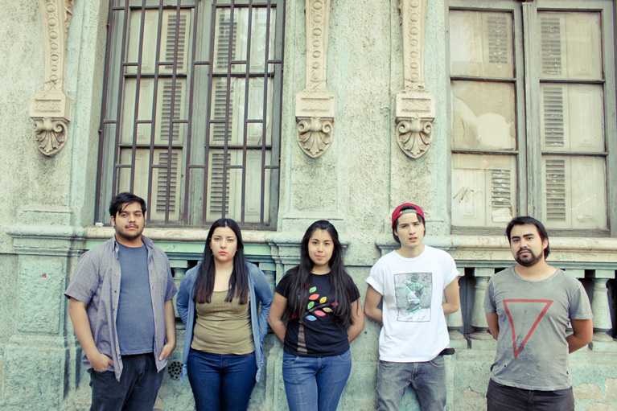

Silabario reedita single "Fiesta Mala"
El trabajo también estará disponible de manera física en la próxima Feria Pulsar, así como el resto del catálogo Piloto.
Silabario, agrupación fundada en 2011 por Walter Pérez y Francisca Fuentes, libera de manera digital y a través del sello Piloto, una onírica reedición de dos de sus mejores canciones. Los tracks son parte del single Fiesta Mala, y se encuentran disponibles para escucha y descarga gratuita en http://piloto.club/fiesta-mala.
"Me gustan mucho esas bandas en que los clímax de las canciones se logran por la letra. Belle and Sebastian tiene eso, o los White Stripes. Va por el lado de lo que me gusta leer también. En principio los temas eran casi hablados, como en la Velvet, que es muy pop con sus pianitos y xilófonos, pero que también tiene ese lado más ruidoso y molesto. Me gustan esos extremos", dice Walter sobre lo que se podrá apreciar en "Fiesta Mala"
Tras una primera tocata a comienzos del 2014, el proyecto que se inició en la zona sur de Santiago (Puente Alto – San Miguel), se afianzó y a mediados del 2014 sumó a tres Integrantes; Rosario, amiga de adolescencia de Francisca, y a Nicolás y Francisco, primos de Walter. El dúo se convertiría así en una empresa familiar que en directo consta de tres guitarras, teclado y batería.
Tras medio año de coqueteos y mensajitos, Silabario entra oficialmente a las filas de Piloto a mediados del 2014, declarando como hito inicial la reedición de dos de sus canciones en el presente single.
Piloto en Feria Pulsar
Tanto "Fiesta Mala", como el recientemente liberado "Pintura" de los Floridanos Patio Solar, así como el naciente catálogo de Piloto en (casi) su totalidad, podrá ser adquirido en formato físico en la Feria Internacional de la Música de Santiago, Pulsar 2014. Además, en el escenario acústico de la Feria se presentarán los grupos Amarga Marga y Patio Solar, los días sábado 22 y domingo 23, respectivamente.
Amarga Marga
Sábado 22, 17:00hrs @ Escenario Pulsar Acústico
Patio Solar
Domingo 23, 16:30hrs @ Escenario Pulsar Acústico
Pujem
Viernes 15:50hrs @ Stand Piloto*
Niños del Cerro
Sábado 15:50hrs @ Stand Piloto*
Silabario
Domingo 23, 14:00hrs @ Stand Piloto*
*Stand 61 en el centro de la planta baja en Feria PulsarADJUNTO: FOTO GRANDE BANDA (SILABARIO)
PILOTO: Sitio Web Facebook Twitter Instagram Soundcloud
✈ comunicaciones@piloto.club ✈ contacto@piloto.club ✈